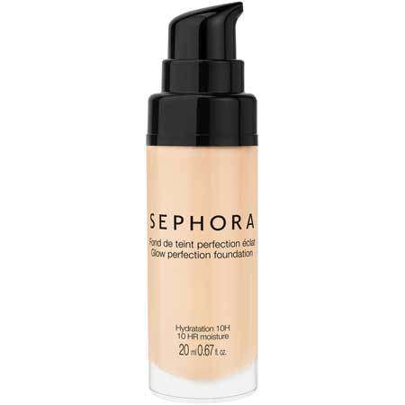
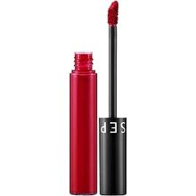
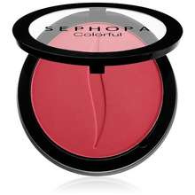
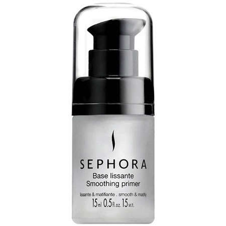
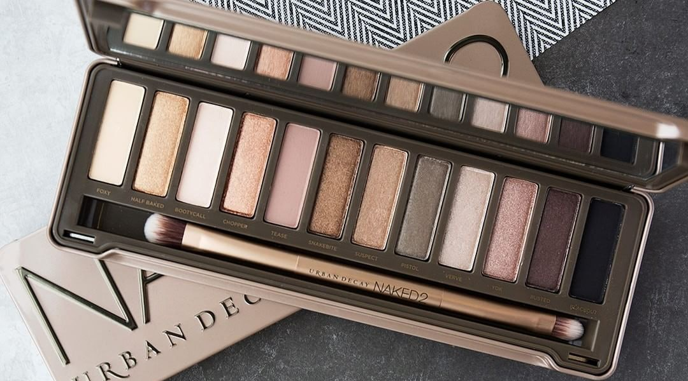

Basic Of Makeup Tools
Basic Of Makeup Tools
Foundation

To transmit and distribute the total load of the structure to a larger area of underlying support.
To prevent differential settlement of the structure.
Lipstick

Lipstick is a cosmetic product containing pigments, oils, waxes,
and emollients that apply color, texture, and protection to the lips
Blusher

Blusher has 4 functions which can be used separately or together: To add shape to the face.
To soften the cheek bones. To add colour to the face.
Primer

A primer is a short nucleic acid sequence that provides a starting point for DNA synthesis.
In living organisms, primers are short strands of RNA.
A primer must be synthesized by an enzyme called primase, which is a type of RNA polymerase, before DNA replication can occur.
Eyeshadow

Eye shadow is a cosmetic that is applied on the eyelids and under the eyes.
It is commonly used to make the wearer's eyes stand out or look more attractive.
Eye shadow can add depth and dimension to one's eyes, complement one's eye color,
make one's eyes appear larger, or simply draw attention to the eyes.